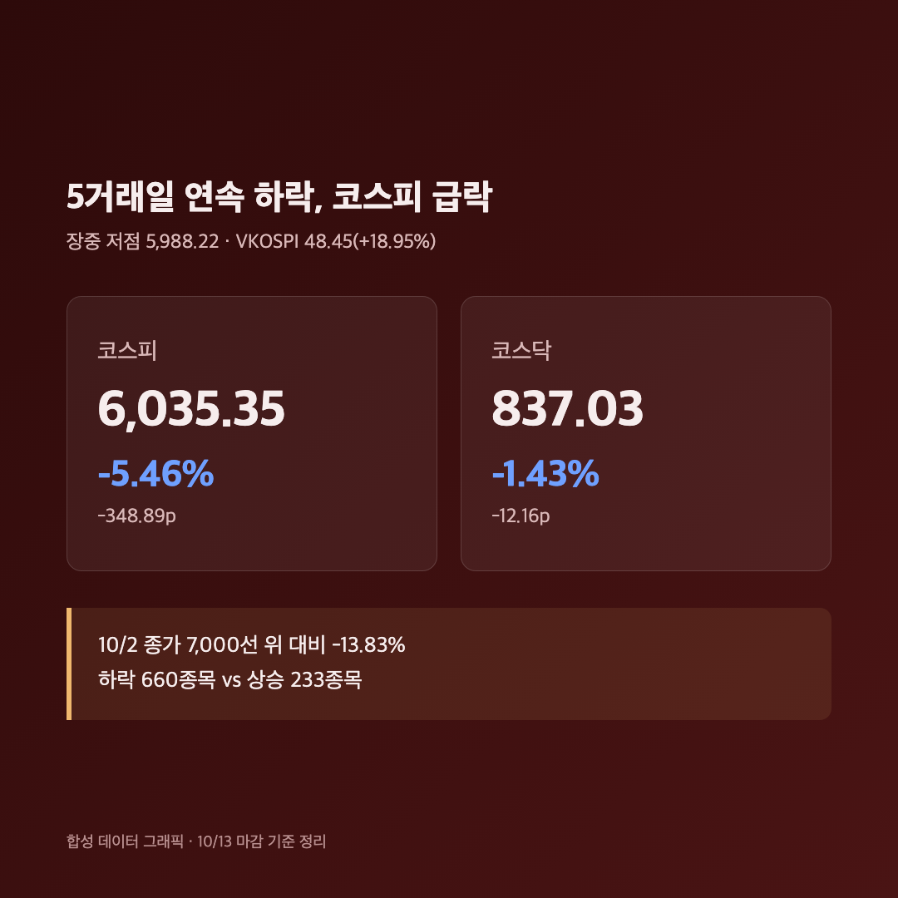
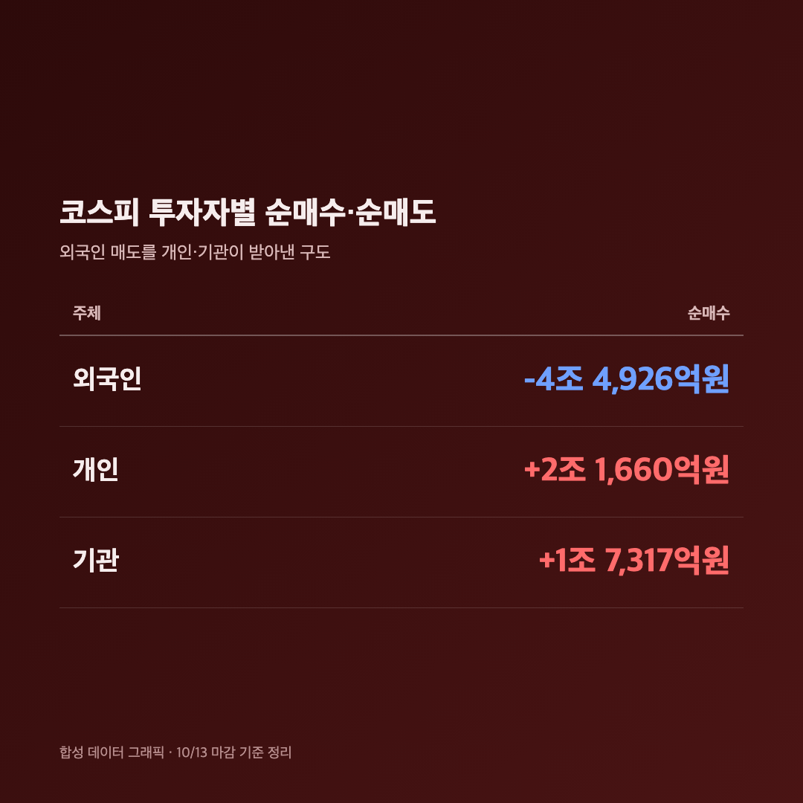
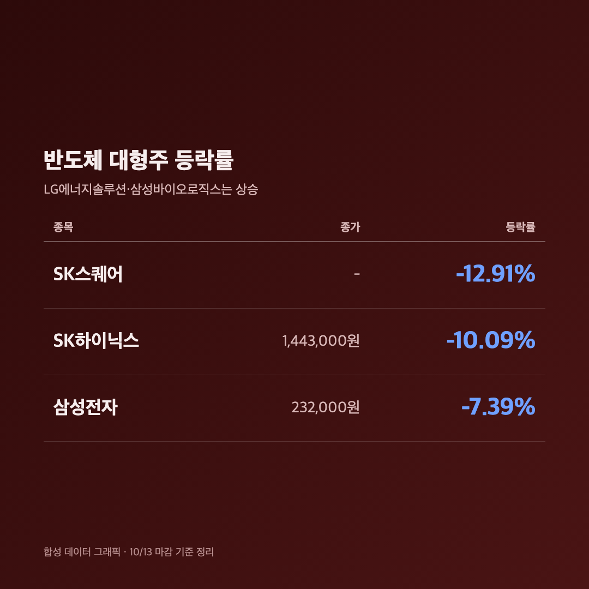
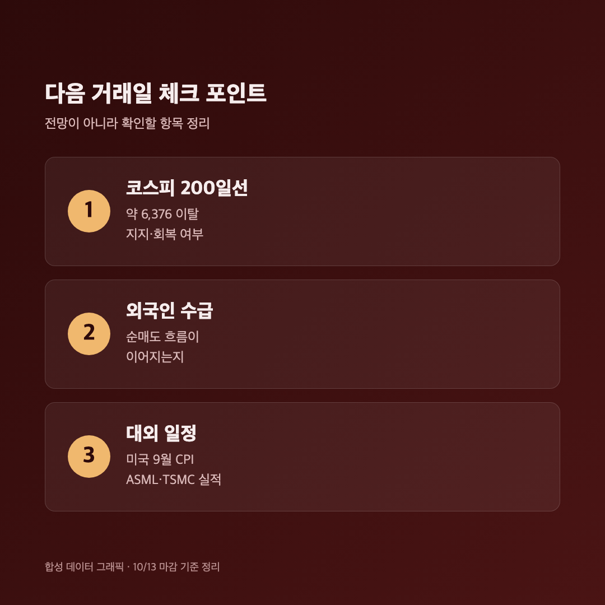

삼성전자 -7.39%. 숫자만 보고 한참 말이 안 나왔어요. 어제 -3.65%에 "설마 오늘은 쉬어가겠지" 했는데, 쉬기는커녕 사이드카까지 터졌습니다.
참고로 오늘(10/13, 화)은 정상 개장일이었고, 아래 수치는 전부 오늘 마감 기준이에요.
🚨 코스피 6,035.35 (-5.46%), 장중 6,000선 깨졌다가 간신히 회복
코스피 6,035.35 (-348.89포인트, -5.46%) / 코스닥 837.03 (-12.16포인트, -1.43%) |

코스피는 6,186.08(-3.10%)로 출발해 장중 저점 5,988.22까지 밀렸어요. 7월 30일 이후 처음으로 6,000선이 무너졌다가, 종가는 간신히 6,000선 위에서 마감했습니다. 이로써 5거래일 연속 하락이고, 10/2 종가(7,000선 위) 대비로는 13.83% 빠진 거예요. 공포지수 격인 VKOSPI도 48.45로 18.95% 뛰었고, 하락 종목은 660개, 상승은 233개였습니다.
코스닥은 장중 -3~4%대(813~819선)까지 밀렸다가 마감 때 -1.43%로 낙폭을 크게 줄였어요. "코스닥도 같이 가나" 싶었는데 의외로 버텼습니다. 다만 전날 -4.83%를 맞은 직후라는 점은 기억해둘게요.
⏱️ 오전 9시 47분 매도 사이드카 – 8월 19일 이후 55일 만
코스피200 선물 -5.08% / 매도 사이드카 발동 (프로그램 매도호가 5분 정지) |
장 시작 47분 만인 9시 47분 58초에 매도 사이드카가 발동됐어요. 코스피200 선물이 기준가 대비 5% 이상 빠진 상태가 1분 지속되면 걸리는 장치인데, 프로그램 매도호가 효력을 5분간 멈춥니다. 올해 코스피 사이드카로는 50번째이고 매도 기준으로는 26번째라고 해요. (파이낸셜뉴스 집계)
제 계좌는 이미 한참 전에 파랗게 질려 있었지만, 이 알림 뜨는 순간 "아, 오늘 진짜 심상치 않구나" 싶었어요.
💸 외국인 4조 4,926억원 순매도, 개인과 기관이 받아냈어요
외국인 -4조 4,926억원 / 개인 +2조 1,660억원 / 기관 +1조 7,317억원 (코스피) |

코스피에서 외국인이 4조 4,926억원을 팔았어요. 이 물량을 개인이 2조 1,660억원, 기관이 1조 7,317억원 사들이며 받아냈습니다. (장중에는 시점별로 1조~3조 원대로 집계가 계속 달라졌고, 여기서는 이투데이의 마감 기준 수치를 적었어요.) 서울신문은 "장중 특별한 악재가 없었는데 외국인 매도에 지수가 민감하게 반응했다"고 해석하기도 했습니다.
어제는 개인이 받아냈다면 오늘은 기관까지 같이 받아냈어요. 그래도 4조 원대 매도 앞에서는 역부족이었네요.
🏭 삼성전자 -7.39%, SK하이닉스 -10.09%…반도체가 끌어내린 하루
삼성전자 232,000원 (-7.39%) / SK하이닉스 1,443,000원 (-10.09%) / SK스퀘어 -12.91% |

SK하이닉스는 10% 넘게 빠져 144만 3,000원, SK스퀘어는 -12.91%였어요. 반면 LG에너지솔루션과 삼성바이오로직스는 올랐습니다. 반도체만 얻어맞은 날이었다는 뜻이에요.
삼성전자 25주를 들고 있는 저는 "23만 원대까지 이렇게 쉽게 내려오네" 하고 화면을 한참 쳐다봤습니다. 장중 업종 등락만 봐도 전기전자가 -6%대로 제일 컸고, 금융(-3.91%)과 증권(-3.18%)도 같이 밀렸어요.
🔍 왜 빠졌나 – CXMT 발 메모리 경쟁 우려가 불씨
원인은 몇 가지가 겹쳤어요.
• 중국 CXMT: 차세대 서버용 DDR5 RDIMM을 연말까지 내놓겠다고 밝히면서 메모리 경쟁 심화 우려가 커졌어요. 다만 헤럴드경제는 아직 양산 전이고 수율·성능·고객 인증은 검증되지 않았다고 짚었습니다.
• 간밤 미국 반도체: 필라델피아반도체지수 -2.67%, 마이크론 -3.88%, 샌디스크 -5.97%, 나스닥 -0.44%였어요. 브로드컴·인텔 경영진의 AI 투자 자금 조달 부담 발언도 불안을 키웠다고 해요.
• 수급 약화: 키움증권 한지영 연구원은 개인 투자심리 약화, 삼성전자 자사주 매입 종료, 외국인 매도가 겹쳐 국내 증시 수급 기반이 약해졌다고 설명했어요.
• 국제유가: 상승이 부담이라는 보도도 있었는데, 구체적인 수치는 확인하지 못해서 따로 적지 않을게요.
환율은 어제(10/12) 정규장 마감이 1,335.1원(-7.7원)이었다는 것까지만 확인했고, 오늘 마감 환율은 확인하지 못했어요.
🔮 내일부터 뭘 봐야 하나 – 코스피 200일선 지지 여부

코스피는 200일선(약 6,376)을 이탈한 상태예요. 키움증권 한지영 연구원은 단기적으로 이 200일선을 되찾거나 지지하는지가 중요하다고 봤습니다. KB증권 김민규 연구원은 지금이 W자 반등의 두 번째 바닥을 시험하는 구간이라며 5,600~6,000 초반대는 매수 기회로 볼 수 있다고 했어요. 반면 iM증권 양현경 연구원은 기술적 반등은 가능해도 대형 반도체주 반등 강도는 제한적일 거라고 봤고요. 전망은 갈리니까 하나만 믿지는 않으려고요.
확인할 일정으로는 미국 9월 CPI, ASML·TSMC 실적이 거론됐어요.
마무리하며
정리하면 오늘 코스피는 6,035.35(-5.46%), 코스닥은 837.03(-1.43%)으로 마감했고, 외국인이 4조 4,926억원을 순매도했어요. 삼성전자는 23만 2,000원, SK하이닉스는 144만 3,000원이 됐습니다.
솔직히 "싸졌다"는 말에 혹하긴 하는데요, 저는 일단 삼성전자 25주는 그대로 두고 추가 매수는 200일선 지지 여부부터 보고 판단하려고 해요. 사이드카까지 본 날엔 버튼 누르는 손도 조심스럽네요.
오늘은 손절도 익절도 못 했습니다, 그냥 버텼어요. 내일은 조금만 덜 파랗기를 🌱